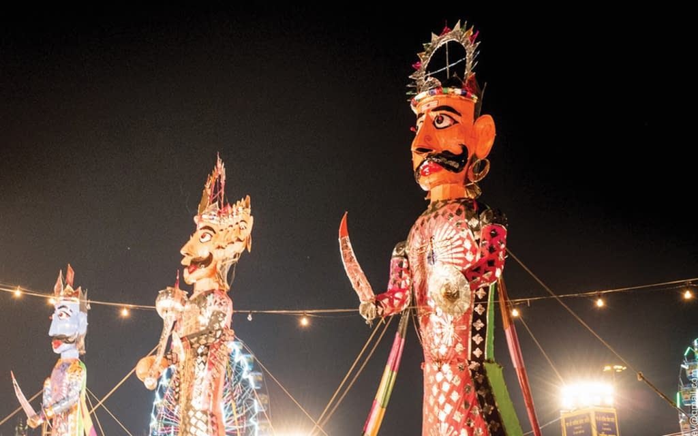

DASARA

Vijayadashami (Sanskrit: विजयदशमी, romanized: Vijayadaśamī), also known as Dussehra, Dasara or Dashain, is a major Hindu festival celebrated at the end of Navaratri every year. It is observed on the tenth day in the Hindu calendar month of Ashvin, the seventh month of the Hindu Luni-Solar Calendar, which typically falls in the Gregorian months of September and October.[5][6][7] Vijayadashami is observed for different reasons and celebrated differently in various parts of the Indian subcontinent.[8][1][9][5] In the southern, eastern, northeastern, and some northern states of India, Vijayadashami marks the end of Durga Puja, remembering goddess Durga's victory over the buffalo demon Mahishasura to restore and protect dharma.[5][10][11] In the northern, central and western states, the festival is synonymously called Dussehra (also spelled Dasara, Dashahara). In these regions, it marks the end of Ramlila and remembers god Rama's victory over Ravana. Alternatively, it marks a reverence for one of the aspects of goddess Devi,